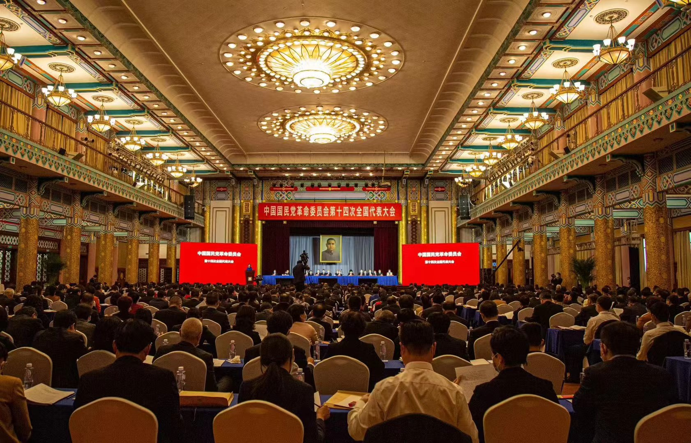
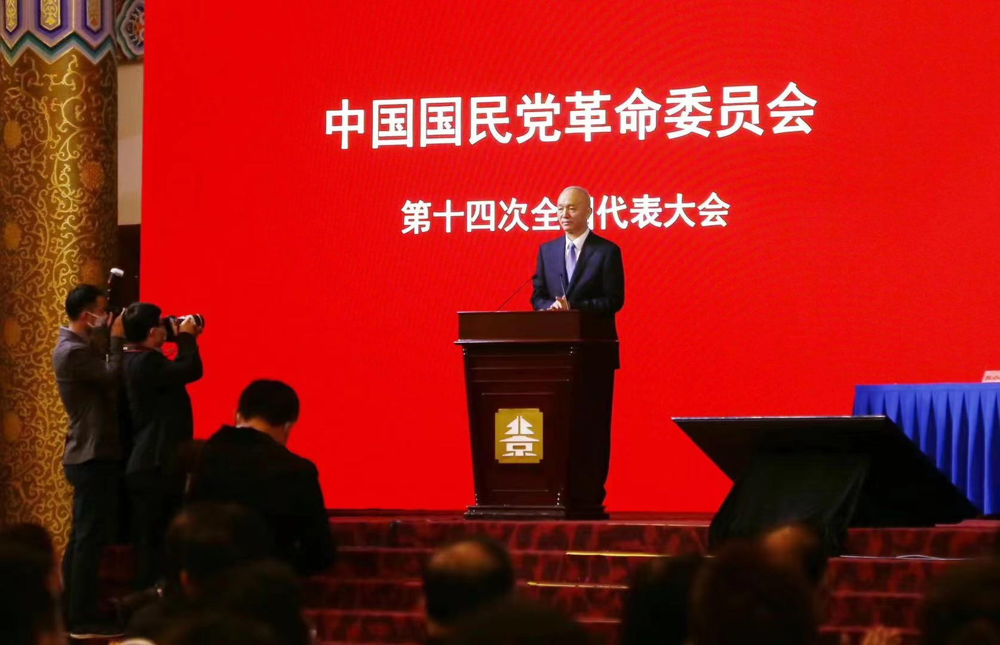
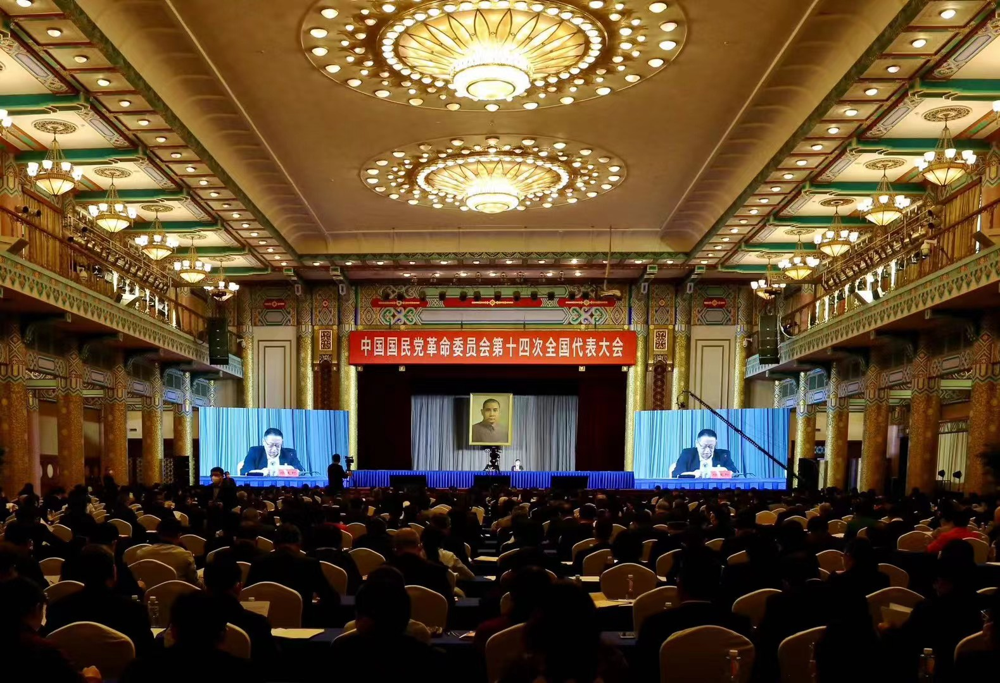
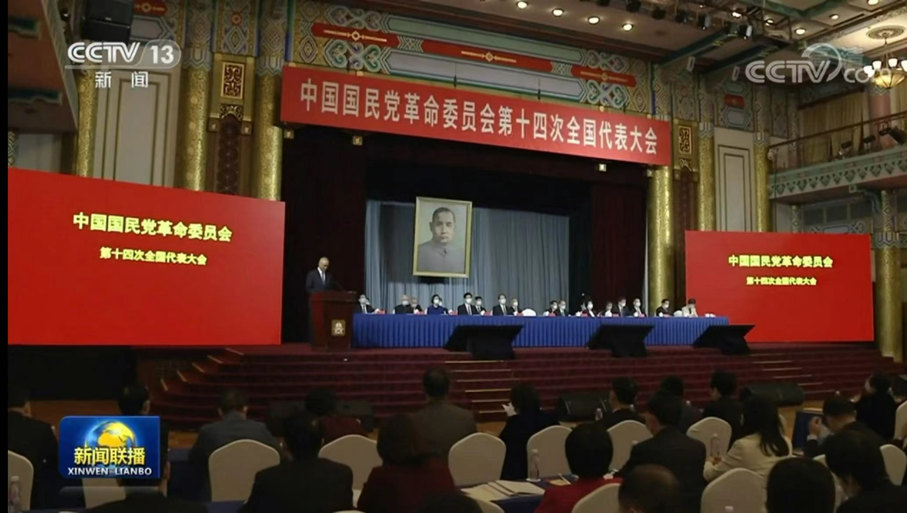
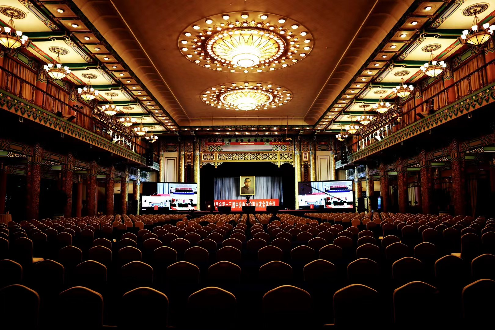
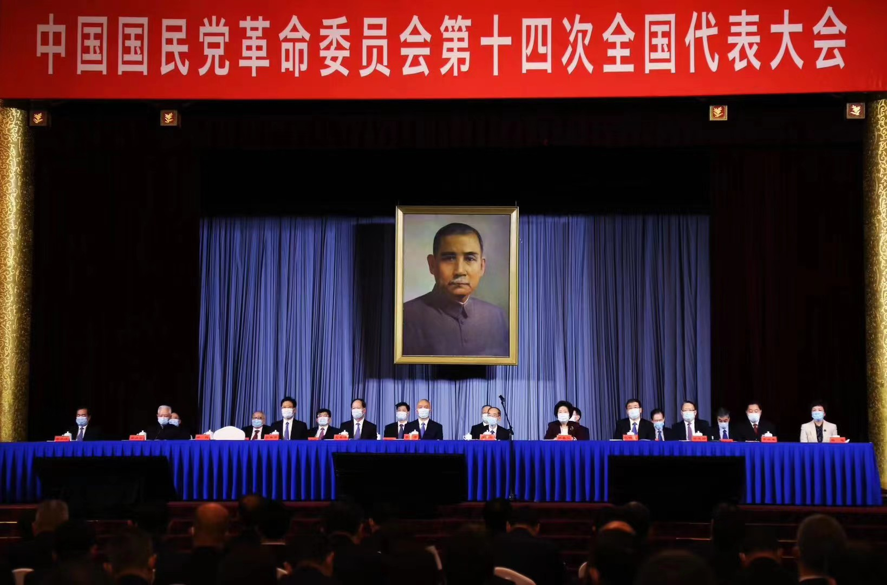

项目背景
民革第十四次全国代表大会是高规格的政治会议，几百名来自全国各地的代表参会，对会议流程、安保、接待、物料的要求都是最高标准。任何一个小失误都可能造成重大影响。
我的角色
我负责会议的整体会务策划和现场执行统筹。政治会议跟商业活动完全不同——不能有花里胡哨的东西，但每一个细节必须零差错。我做的核心工作是把整个会议的几百个关键节点整理成执行手册，从代表接机、住宿分配到会场座次、投票流程、午餐动线，全部落实到人、到分钟。提前做了三次全流程彩排。





